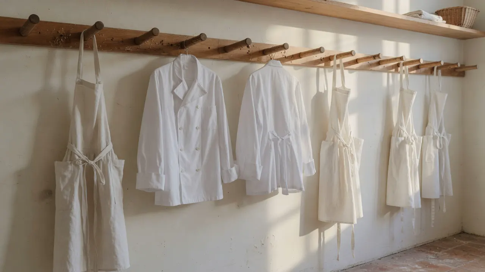
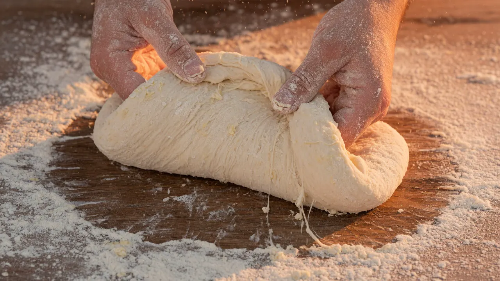

Recrutement
Travailler juste, ensemble
Le turn-over est très faible chez Monco’Pain. Cela ne signifie pas que la porte est fermée : chaque candidature est lue, même lorsqu’aucun poste n’est ouvert.


Une équipe avant un intitulé
Plus de dix artisans, des journées qui se répondent
Le fournil, la pâtisserie, la vente et les autres métiers de la maison ont leurs heures et leurs exigences. Le pain demande du temps ; le service demande de l’attention ; l’atelier demande de la coordination.
Une candidature simple, lisible, personnelle
Envoyez un e-mail à boulangerie@moncopain.ch avec le métier recherché, votre disponibilité, quelques lignes sur votre parcours et un CV si vous en avez un.
Aucun formulaire de cette étude ne collecte de dossier. Le lien ouvre votre messagerie pour contacter la boulangerie réelle.
Voir le quartier
Venir d’abord, si cela vous aide
Boulevard de Grancy 26, à 25 mètres du métro Grancy et à 100 mètres de la gare. La boutique ouvre dès 6 h en semaine. Passer acheter du pain ne remplace pas une candidature ; cela permet de comprendre l’adresse et son rythme.
Horaires et accès